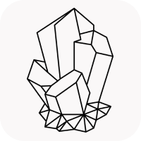

Welcome to my page dedicated to archiving my research notes!
These notes range from insightful remarks on selected topics or results, to shorter snippets of theorems, definitions, conventions, and so on that might be of interest when defocused from a specific context. Some of these notes are meant to be a supplement to the blog – more like auxiliary appendices to the contents of the blog posts.
Of course, some of these notes are written entirely for my own learning. Regardless of the context in which the notes are being written, either for research or learning, I try to be as insightful and astute as possible so as to heighten the overall standard of the notes. The upshot of this might be that some of the notes might be overly technical or advanced, but, in fairness, the notes are primarily written for my own usage.
SELECTED WRITING
CATEGORIES
-
Lie Symmetry Analysis
Notes primarily from Applications of Lie Groups to Differential Equations by Peter J. Olver and related articles on similar topics, related to my research project entitled Symmetry Analysis on Nonlocal Equations. -
Machine Learning
I occasionally enjoy reading about what mathematics and algorithms encompass the world of machine learning and neural networks. -
Numerical Analysis
Numerical algorithms and notes from self-studying topics in applied mathematics. -
Partial Differential Equations
Remarks, theorems and notes on papers that relate to my main field of expertise. -
Probability and Stochastics
Self-study notes from Çınlar's book Probability and Stochastics, in addition to smatterings of data analysis and statistics.
 ABOUT QUARTZ
This page and corresponding subpages are made using Quartz 4.0 by Jacky Zhao, which transforms markdown files into static webpages. My personal workflow utilizes Obsidian and Visual Studio Code to manage and write the markdown files themselves, which are then pushed into a GitHub repo of Quartz to be rebuilt and updated locally.